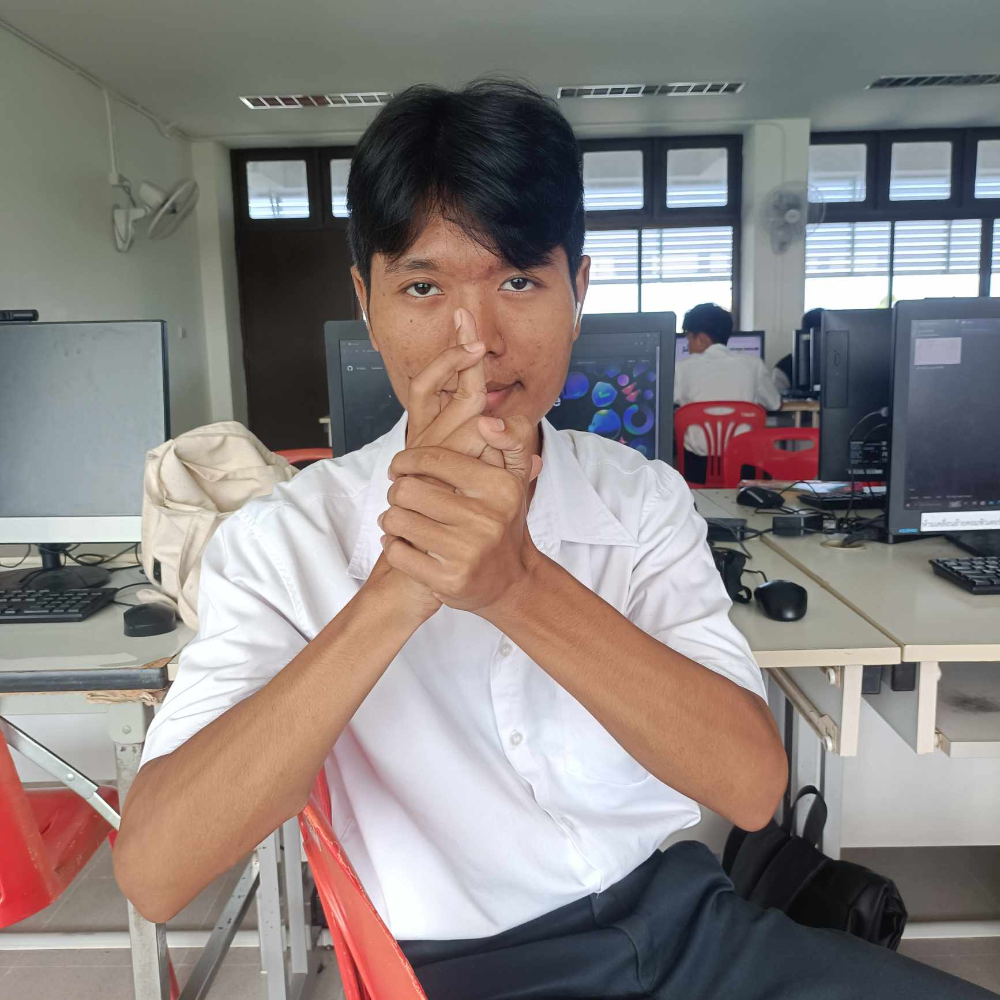

ข้อมูลส่วนตัว
ชื่อ: ณัฐวัตร ทองสุวรรณ
อายุ: 17 ปี
ที่อยู่: ชลบุรี - ห้วยใหญ่ - บางละมุง - หมู่ 11 บ้านเลขที่ 13/4
ข้อมูลด้านการศึกษา
- จบปีการศึกษาอนุบาล : อ.3
- จบปีการศึกษา : ประถม ป.6
- จบปีการศึกษา : มัธยม ม.3
(กำลังศึกษาที่ : เทคนิคสัตหีบ สาขาเทคโนโลยีสารสนเทศ ปวช.2)
งานอดิเรก/สิ่งที่สนใจ
- งานอดิเรก : วาดรูป ดูหนัง-ฟังเพลง เล่นเกมส์
- สิ่งที่สนใจ : เขียนเนื้อเรื่องเกมส์วิชัวร์โนเวล, ออกแบบตัวตัวละคร, และการสร้างเกม
แรงบรรดาลใจที่เลือกเรียนสาขา เทคโนโลยีสารสนเทศ
ตอนแรกผมไม่ได้วางแผนว่าจะเข้าศึกษาต่อในระดับ ปวช. แต่ด้วยเหตุผลหลายๆ อย่าง โดยเฉพาะการที่ผมมีไอดอลที่เป็นครีเอเตอร์ด้านเทคโนโลยี ทำให้ผมเริ่มสนใจในสายงานนี้ และเห็นโอกาสในการประกอบอาชีพในอนาคต จึงตัดสินใจเลือกเรียนสาขาเทคโนโลยีสารสนเทศ
ผลงาน/เกียรติคุณ
- ชนะการแข่งขันกีฑา : ได้ลำดับที่ 3
- ชนะการแข่งขันประกวดวาดภาพระบายสี : ได้ลำดับที่ 1
- ประกวดวันแม่ : ได้รับรางวัลชมเชย
- เกิดแล้วเดินได้ : 7 ก้าว
- ได้มีผู้ติดตามใน TikTok ถึง 1000Sup